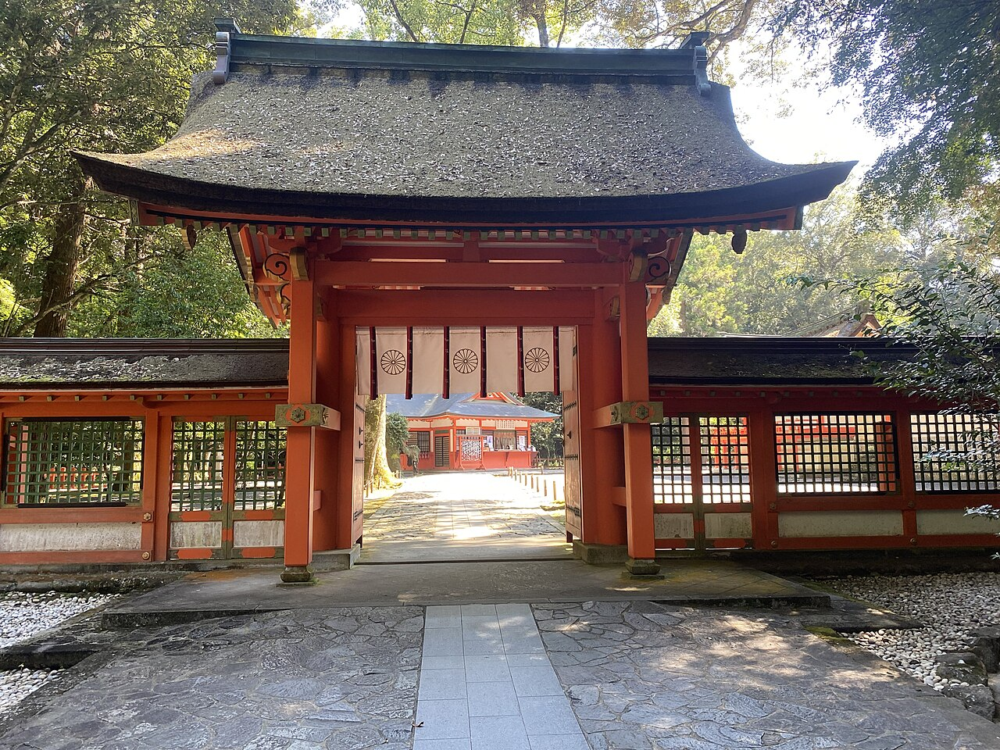

宇佐神宮
全國八幡宮的總本宮，參拜時要拍手四次

基本資料
| 項目 | 內容 | 來源 |
|---|---|---|
| 日文名稱 | 宇佐神宮 | [1] |
| 讀音 | うさじんぐう | [1] |
| 所在地 | 大分縣宇佐市南宇佐 2859 | [1][2] |
| 主祭神 | 八幡大神（應神天皇）、比賣大神、神功皇后 | [2][3] |
| 創建年代 | 725 年（神龜 2 年） | [2][6] |
| 社格 | 式內社（名神大社）、豐前國一宮；舊社格為官幣大社，現為神社本廳的別表神社 | [1] |
由來與歷史
宇佐神宮是日本全國八幡宮的總本宮，也通稱「宇佐八幡」或「宇佐八幡宮」[1]。它建於 725 年，是僅次於伊勢神宮的「第二宗廟」，受到皇室崇敬[6]。旅遊網站也稱它為「西之伊勢」[2]（僅單一旅遊網站資料）。
八幡神與朝廷的關係很早就開始了。《續日本紀》記載，聖武天皇在藤原廣嗣之亂時，曾下詔請大將軍大野東人向八幡神祈求[4]。奈良時代，宇佐神宮因為協助東大寺大佛的建造而聲名大噪[2]（僅單一旅遊網站資料）。
宇佐神宮是「勅祭社」之一，天皇會派遣敕使前來祭祀[2]。鎌倉幕府的源氏將軍把八幡神奉為氏神，影響力因此遍及全國[2][4]。
祭神與信仰
宇佐神宮祭祀八幡神，見 八幡神。上宮由三座本殿並列而成[2]，面向本殿時從左邊數起[3]：
| 本殿 | 祭神 |
|---|---|
| 一之御殿 | 八幡大神（應神天皇） |
| 二之御殿 | 比賣大神（宗像三女神） |
| 三之御殿 | 神功皇后 |
（表格依據 [2][3]；「宗像三女神」只出現在 [2]。）
參拜時要依照一之御殿、二之御殿、三之御殿的順序[2]。
境內看點
- 上宮本殿：採用「八幡造」，特徵是兩棟建築前後相連[2]。本殿被指定為國寶[3][5][6]。（旅遊網站 japantravel 有一處寫三座本殿於 1861 年重建、是國家重要文化財[2]，與觀光廳和宇佐神宮監製的官方資訊不同，這裡以後兩者為準。）
- 西大門：建於江戶時代的朱紅色樓門，是進入神域的第一道門[2]。
- 呉橋：朱紅色的太鼓橋，相傳只有天皇的敕使和神職人員才能通行，一般參拜者要從旁邊的參道前往上宮[2]。
- 下宮：位在山腳平地，同樣供奉三柱神明，不用爬階梯，對年長者比較友善[2]。
- 境內社：大尾神社、若宮神社，若宮神社祭祀應神天皇的皇子們[2]。
- 寶物館：收藏奈良時代到江戶時代的文物[2]。
參拜小提醒
- 宇佐神宮的拜法是「二拜四拍手一拜」，比一般神社的「二拜二拍手一拜」多拍兩下[2][3]。一般參拜方法見 參拜方式。
- 授與所和本殿部分區域有攝影限制，看到告示就收起相機[3]。
- 本殿平日不開放內部，特別拜觀只在公告日期舉行[3]。
來源
- 中文維基百科，〈宇佐神宮〉
- japantravel.co，〈【宇佐神宮】完整參拜攻略：交通+歷史+禮儀全解析（2026更新）〉
- Chole 在九州，〈宇佐神宮 2026：由上宮三殿走到下宮的完整參拜遊記〉
- 中文維基百科，〈八幡神〉
- 日本國土交通省觀光廳，〈宇佐神宮的歷史（多言語解說文資料庫）〉
- GLTJP（宇佐神宮監製的官方資訊），〈宇佐神宮〉